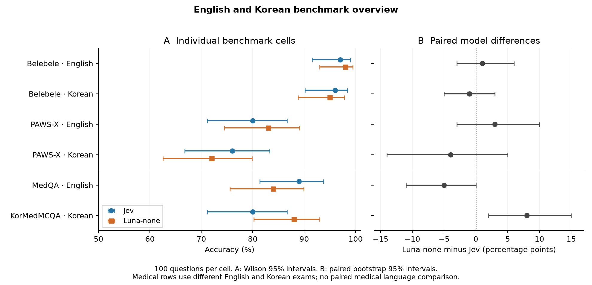

English and Korean benchmark overview
The equal-weight six-cell descriptive average is Jev 86.33% and Luna-none 86.67%. Luna minus Jev is +0.33 percentage points (exploratory cluster-bootstrap 95% interval -2.83 to +3.17). This summarizes this chosen battery, not general model ability or a medical language effect.
Restricting the average to matched Belebele and PAWS-X gives Jev 87.25% and Luna-none 87.00%, a difference of -0.25 points (95% interval -4.25 to +3.75).

| Task | Language | Jev | Luna-none | Luna − Jev, pp (95% CI) |
|---|---|---|---|---|
| Belebele | English | 97/100 | 98/100 | +1 (-3, +6) |
| Belebele | Korean | 96/100 | 95/100 | -1 (-5, +3) |
| PAWS-X | English | 80/100 | 83/100 | +3 (-3, +10) |
| PAWS-X | Korean | 76/100 | 72/100 | -4 (-14, +5) |
| MedQA | English | 89/100 | 84/100 | -5 (-11, +0) |
| KorMedMCQA | Korean | 80/100 | 88/100 | +8 (+2, +15) |
Methods and interpretation
This is a retrospective aggregation of frozen results, with no additional model calls. Each cell uses 100 questions with the same items for both models. The primary display uses English instructions for English content and Korean instructions for Korean content. Therefore its general-task language differences combine content and instruction language. The earlier Korean-content, English-instruction condition is retained as a sensitivity analysis below.
The six cells have equal weight. With 100 answers per cell, this equals 518/600 correct for Jev and 520/600 for Luna. These are 400 unique source questions per model because the 100 Belebele and 100 PAWS-X questions each appear in two languages. A naive independent-binomial interval over 600 answers would ignore that dependence.
The exploratory aggregate difference interval uses 4,000 stratified paired cluster bootstrap draws, seed 20260917. Each source dataset is a fixed stratum. Source questions are sampled within strata, keeping both models and both translations together. Task weights remain fixed. This captures question-sampling variation within this battery, not uncertainty about which tasks to include. Intervals are not adjusted for multiple comparisons.
Belebele and PAWS-X are matched across languages. MedQA and KorMedMCQA are separate original-language examinations, with different curricula, difficulties, source selection and four versus five options. Medical scores are never treated as paired English/Korean items. A cross-exam ranking reversal does not establish a language effect. The aggregate is descriptive and must not replace the individual task results.
General-task language differences
| Task | Model | Korean − English, pp (paired 95% CI) |
|---|---|---|
| belebele | jev | -1 (-4, +2) |
| belebele | luna | -3 (-7, +0) |
| pawsx | jev | -4 (-13, +5) |
| pawsx | luna | -11 (-20, -2) |
English-instruction sensitivity
For Korean content with English instructions, Jev/Luna accuracy was Belebele 95%/93%, PAWS-X 75%/76%, and KorMedMCQA 82%/89%. These conditions are reported separately and are not counted again in the primary average. With all content using English instructions, the six-cell descriptive average is Jev 86.33% and Luna 87.17%. This sensitivity reinforces that a small aggregate difference depends on protocol choices.
Cost and timing by cell
| Task | Language | Concurrency per model | Jev / Luna median ms | Jev / Luna estimated USD |
|---|---|---|---|---|
| Belebele | English | 1 | 217 / 1060 | 0.002115 / 0.005894 |
| Belebele | Korean | 1 | 221 / 1085 | 0.002583 / 0.007223 |
| PAWS-X | English | 1 | 226 / 1188 | 0.001505 / 0.003599 |
| PAWS-X | Korean | 1 | 224 / 1326 | 0.001698 / 0.004084 |
| MedQA | English | 4 | 229 / 1111 | 0.002305 / 0.006676 |
| KorMedMCQA | Korean | 1 | 219 / 1032 | 0.002395 / 0.006137 |
The selected six cells cost an estimated $0.012600 for Jev and $0.033612 for Luna, including recorded attempts. This is 2.67 times the Jev cost for this battery. Token accounting is provider-specific and prices are estimates, not invoices.
English MedQA used four concurrent requests per provider. Earlier tasks ran sequentially. No pooled elapsed-time speedup is reported across these protocols. The MedQA report records combined wall time separately from summed call durations. No new API cost was incurred to generate this overview.
Reproduction and evidence
Run python -m jevbench.aggregate against the published repository. The output records source response-file checksums, cell membership, aggregate methodology and sensitivity results. Development items, repeated or perturbed robustness items, and unreviewed synthetic medical notes are excluded. Luna supplied categorical answers without probability vectors, so cross-model calibration scores cannot be computed from this run.
Machine-readable aggregation · Original-English MedQA · Original paired comparison